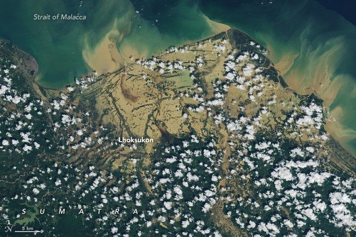

Senyar Swamps Sumatra
Tropical cyclones almost never form over the Strait of Malacca. This narrow waterway, separating Peninsular Malaysia from the Indonesian island of Sumatra, lies so close to the equator that the Coriolis effect is usually too weak to allow storms to rotate and organize into cyclones. However, on November 25, 2025, meteorologists observed a tropical depression intensify into Cyclone Senyar—only the second documented case of a tropical cyclone forming in the strait.
Hemmed in by land on both sides, Senyar made landfall in Sumatra later that day, performing a U-turn and heading east toward Malaysia. As the slow-moving storm passed over Sumatra’s mountainous terrain, it dropped nearly 400 millimeters (16 inches) of rain in many areas, according to satellite-based estimates from NASA’s Global Precipitation Measurement (GPM) mission. (Local ground measurements may vary due to averaging in the satellite data.)
The heavy rainfall caused extensive flash floods and landslides in Sumatra’s rugged landscape. Streams and rivers overflowed with sediment-laden waters that swept through villages, towns, and cities. Damage was worsened by an earthquake on November 27 and by loose piles of timber that became destructive battering rams in floodwaters. As of December 4, Indonesian authorities reported several hundred deaths and more than 700,000 people displaced.
The OLI-2 (Operational Land Imager-2) on Landsat 9 captured an image of flooding in Aceh and North Sumatra provinces on November 30, 2025. Muddy, sediment-filled water appears to have swamped much of Lhoksukon, a town of 40,000 people, along with several surrounding villages.
Other tropical cyclones and monsoon rains affecting Sri Lanka, Thailand, Malaysia, and Vietnam at roughly the same time caused widespread destruction in the broader region. According to the United Nations Office for the Coordination of Humanitarian Affairs, flooding has affected more than 10.8 million people and displaced over 1.2 million.